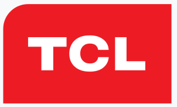
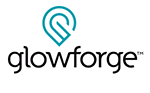
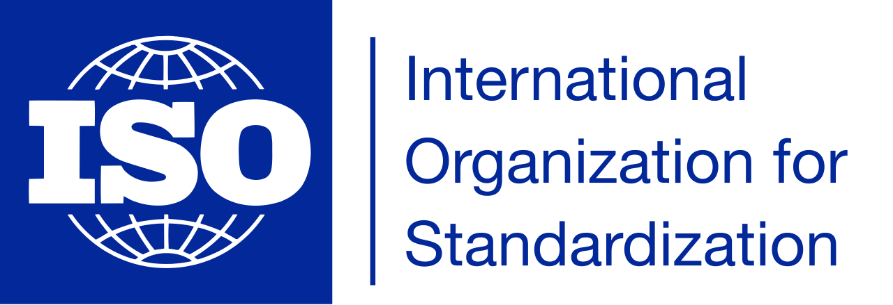

2020
TCL designs, develops, manufactures and sells products including television sets, mobile phones, air conditioners, washing machines, refrigerators and small electrical appliances. In 2010 it was the world's 25th-largest consumer electronics producer. Since 2015, it remains the third-largest television manufacturer by market share. TCL’s mobile phones include Alcatel, Thomson and BlackBerry.
With Cynergy recognized as the world's largest Google ASP, Cynergy was awarded the Google Non-Phone hardware contract and product line. Our scope provides customer data information protection from returned hardware products and offers repair level services for refurbished products for fulfillment and advanced replacements.
2019
Cynergy has expanded its excellent re-manufacturing abilities to the 3D and Laser Printing industry by establishing business with Glowforge.
Glowforge Inc. manufactures 3D laser printers. Its products are used to shape leather, sculpt wood, slice acrylic, cut paper, form foam, trim fabric, engrave glass, and etch metal. The company was incorporated in 2014 and is based in Seattle, Washington.
Formlabs manufactures SLA and SLS 3D printers and is expanding access to digital fabrication, so anyone can make anything. Their products are used in a variety of fabrication settings including engineering, manufacturing, education, entertainment, jewelry making, dental, and medical and is headquartered in Somerville, Massachusetts.
2018
Cynergy successfully updates its quality management system to comply with ISO 9001:2015 standards.
Cynergy conforms to the Quality Management System requirements for the provision of warranty services, re-manufacturing, and repair of mobile phones and other electronic devices across a broad spectrum of manufacturers and their product retailers.
2016
Cynergy has proudly established business with Google, working with their first cellphone development, Google Pixel.
These powerful and reliable devices have one of the best-rated smartphone cameras. Pixel handsets are fully integrated with Google's search services and Google Assistant.
2014
Due to continuous growth in business, Cynergy has expanded to a larger, state of the art facility in Grapevine TX.
While maintaining top customer satisfaction and reliability, Cynergy continues to thrive and establishes a relationship with T-Mobile, and has acquired both their in warranty and out of warranty business.
2013
Cynergy is registered as ISO 9001-2008 certified.
Cynergy conforms to the Quality Management System requirements for: Electronic repair of components for cellular phones.Cynergy 1 LLC software package, a private-label IT logistics system for production line management unique to the industry.
Cynery is assigned certification number: QMS: 1156.
2011
Cynergy successfully initiates a Fort Worth, Texas location featuring an industry-leading turn-around time.
ZTE USA, headquartered in Richardson, Texas, is a subsidiary of ZTE Corporation, a global provider of mobile devices, telecommunication systems, and enterprise solutions.
ZTE is ranked by independent industry analysts as the fourth-largest supplier of mobile devices in the U.S. overall, and second-largest supplier of prepaid devices.
2010
Cynergy’s competitive prices and industry-leading quality drives overall growth requiring a larger facility to meet ongoing customers’ demands.
Cynergy now has the ability to process over 15,000 mobile devices a day.
2007
Cynergy introduces the second-phase of CynergyOne and acquires a larger facility to meet the growing demand for repair services and the ability to process 5,000 to 10,000 mobile phones every 24 hours.
Cynergy 1 LLC software development is culminated featuring user-friendly integrated service data throughout the entire front-to-back process, ultimately allowing customers to track service status, inventory and shipping details in real time via the internet.
2005
Cynergy introduces an industry-leading CynergyOne.
Cynergy 1 LLC software package, a private-label IT logistics system for production line management unique to the industry.
2004
Cynergy’s level-three repair and refurbish capabilities are expanded to handle up to 1,000 mobile phones every 24 hours.
Cynergy’s facilities and services are expanded to around-the-clock operations to meet customer’s demands and growth.
2001
Cynergy continues solid growth by earning an authorized level-three warranty service center for Mitsubishi and LG Electronics.
Cynergy is also named as the number one ranked service provider for LG Electronics as a result of its efforts.
1999
Established in 1999 in Atlanta, Georgia
Cynergy expands into the mobile phone repair market as an efficient and cost-effective troubleshooter. New customers include manufacturers such as Mitsubishi and LG Electronics.